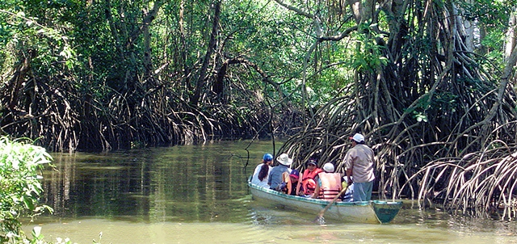
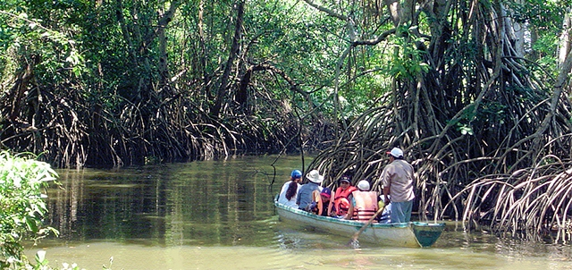

Sinaloa |
Sinaloa perteneció al límite norte de la Mesoamérica. El más alto desarrollo cultural de la región se registró en la parte centro y sur y rumbo a los valles y a las costas. Del río Fuerte hacia el norte se localiza la región conocida como Aridoamérica, esta parte comprende los lugares desérticos y áridos del norte de la república Mexicana. Ahí vivieron grupos humanos conocidos como chichimecas. Este recorrido está dirigido a quienes les gustan las playas, la ruta comprende los siguientes puntos:
|
Destinos
Conozca aquí los paquetes que actualmente tenemos a su disposición:
Tabasco |
Es un estado mexicano con una costa en el norte que bordea el golfo de México. En su capital, Villahermosa, está el Parque Museo La Venta, conocido por su zoológico y las colosales esculturas de piedra que datan de la civilización Olmeca. Una ruta en la que se combina la playa, pueblos mágicos y ecoturismo:
 

|
Zacatecas |
Se encuentra en el centronorte de México, en él se encuentra el sitio arqueológico La Quemada, un gran asentamiento precolombino con un museo, una pirámide sobre un cerro y columnas. La capital del estado, también llamada Zacatecas, se encuentra a gran altura y alberga la antigua mina de plata El Edén, con un tren subterráneo que pasa por formaciones rocosas únicas. Para los amantes de los pueblos mágicos en las mejores zonas del centro del país:
|